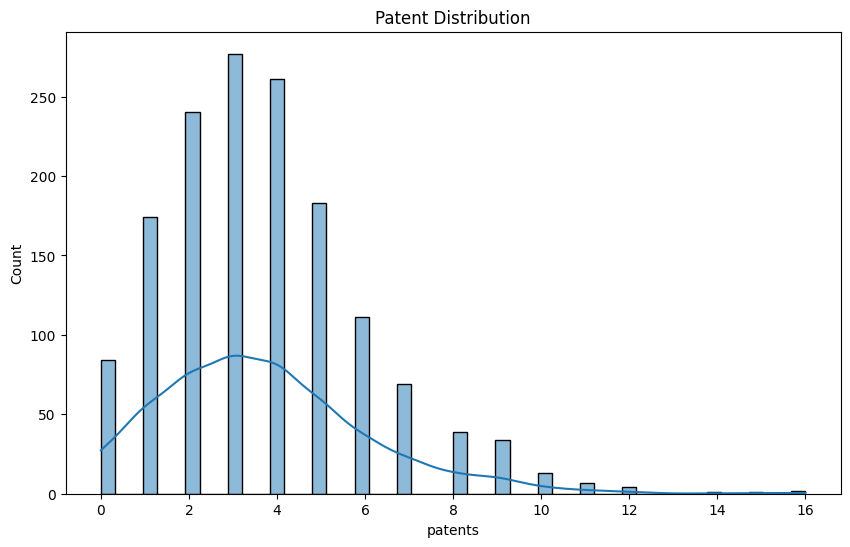
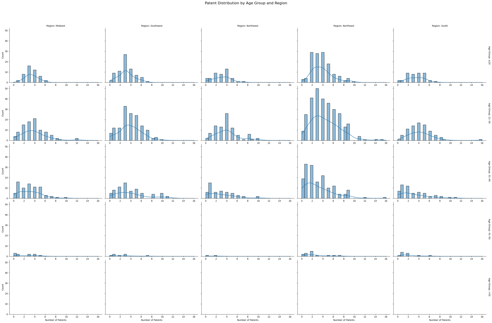
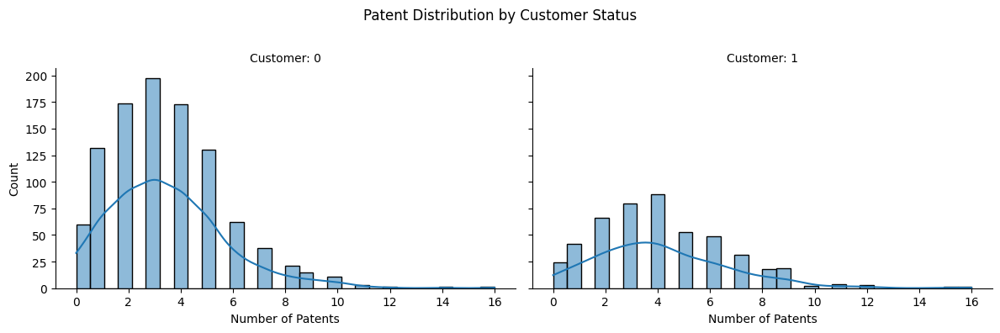
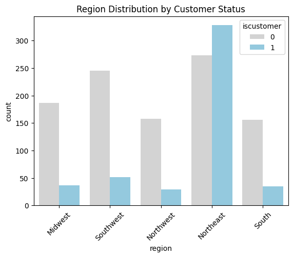
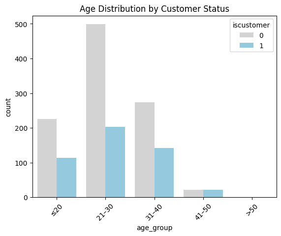
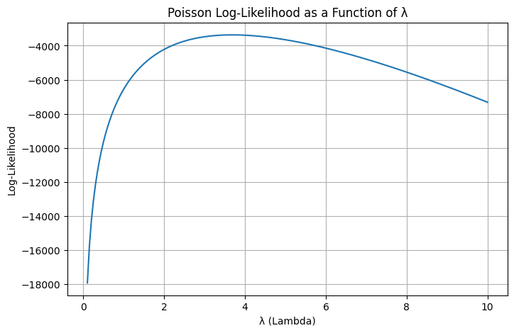

Show Code
import pandas as pd
import numpy as np| Unnamed: 0 | id | days | last_scraped | host_since | room_type | bathrooms | bedrooms | price | number_of_reviews | review_scores_cleanliness | review_scores_location | review_scores_value | instant_bookable | |
|---|---|---|---|---|---|---|---|---|---|---|---|---|---|---|
| 0 | 1 | 2515 | 3130 | 4/2/2017 | 9/6/2008 | Private room | 1.0 | 1.0 | 59 | 150 | 9.0 | 9.0 | 9.0 | f |
| 1 | 2 | 2595 | 3127 | 4/2/2017 | 9/9/2008 | Entire home/apt | 1.0 | 0.0 | 230 | 20 | 9.0 | 10.0 | 9.0 | f |
| 2 | 3 | 3647 | 3050 | 4/2/2017 | 11/25/2008 | Private room | 1.0 | 1.0 | 150 | 0 | NaN | NaN | NaN | f |
| 3 | 4 | 3831 | 3038 | 4/2/2017 | 12/7/2008 | Entire home/apt | 1.0 | 1.0 | 89 | 116 | 9.0 | 9.0 | 9.0 | f |
| 4 | 5 | 4611 | 3012 | 4/2/2017 | 1/2/2009 | Private room | NaN | 1.0 | 39 | 93 | 9.0 | 8.0 | 9.0 | t |
| patents | region | age | iscustomer | |
|---|---|---|---|---|
| 0 | 0 | Midwest | 32.5 | 0 |
| 1 | 3 | Southwest | 37.5 | 0 |
| 2 | 4 | Northwest | 27.0 | 1 |
| 3 | 3 | Northeast | 24.5 | 0 |
| 4 | 3 | Southwest | 37.0 | 0 |
<class 'pandas.core.frame.DataFrame'>
RangeIndex: 1500 entries, 0 to 1499
Data columns (total 4 columns):
# Column Non-Null Count Dtype
--- ------ -------------- -----
0 patents 1500 non-null int64
1 region 1500 non-null object
2 age 1500 non-null float64
3 iscustomer 1500 non-null int64
dtypes: float64(1), int64(2), object(1)
memory usage: 47.0+ KB| patents | region | age | iscustomer | |
|---|---|---|---|---|
| 0 | 0 | Midwest | 32.5 | 0 |
| 1 | 3 | Southwest | 37.5 | 0 |
| 2 | 4 | Northwest | 27.0 | 1 |
| 3 | 3 | Northeast | 24.5 | 0 |
| 4 | 3 | Southwest | 37.0 | 0 |
| ... | ... | ... | ... | ... |
| 1495 | 2 | Northeast | 18.5 | 1 |
| 1496 | 3 | Southwest | 22.5 | 0 |
| 1497 | 4 | Southwest | 17.0 | 0 |
| 1498 | 3 | South | 29.0 | 0 |
| 1499 | 1 | South | 39.0 | 0 |
1500 rows × 4 columns
<class 'pandas.core.frame.DataFrame'>
RangeIndex: 5 entries, 0 to 4
Data columns (total 14 columns):
# Column Non-Null Count Dtype
--- ------ -------------- -----
0 Unnamed: 0 5 non-null int64
1 id 5 non-null int64
2 days 5 non-null int64
3 last_scraped 5 non-null object
4 host_since 5 non-null object
5 room_type 5 non-null object
6 bathrooms 4 non-null float64
7 bedrooms 5 non-null float64
8 price 5 non-null int64
9 number_of_reviews 5 non-null int64
10 review_scores_cleanliness 4 non-null float64
11 review_scores_location 4 non-null float64
12 review_scores_value 4 non-null float64
13 instant_bookable 5 non-null object
dtypes: float64(5), int64(5), object(4)
memory usage: 688.0+ bytes| Unnamed: 0 | id | days | bathrooms | bedrooms | price | number_of_reviews | review_scores_cleanliness | review_scores_location | review_scores_value | |
|---|---|---|---|---|---|---|---|---|---|---|
| count | 5.000000 | 5.000000 | 5.000000 | 4.0 | 5.000000 | 5.000000 | 5.000000 | 4.0 | 4.000000 | 4.0 |
| mean | 3.000000 | 3439.800000 | 3071.400000 | 1.0 | 0.800000 | 113.400000 | 75.800000 | 9.0 | 9.000000 | 9.0 |
| std | 1.581139 | 885.525381 | 53.914748 | 0.0 | 0.447214 | 77.500323 | 63.790281 | 0.0 | 0.816497 | 0.0 |
| min | 1.000000 | 2515.000000 | 3012.000000 | 1.0 | 0.000000 | 39.000000 | 0.000000 | 9.0 | 8.000000 | 9.0 |
| 25% | 2.000000 | 2595.000000 | 3038.000000 | 1.0 | 1.000000 | 59.000000 | 20.000000 | 9.0 | 8.750000 | 9.0 |
| 50% | 3.000000 | 3647.000000 | 3050.000000 | 1.0 | 1.000000 | 89.000000 | 93.000000 | 9.0 | 9.000000 | 9.0 |
| 75% | 4.000000 | 3831.000000 | 3127.000000 | 1.0 | 1.000000 | 150.000000 | 116.000000 | 9.0 | 9.250000 | 9.0 |
| max | 5.000000 | 4611.000000 | 3130.000000 | 1.0 | 1.000000 | 230.000000 | 150.000000 | 9.0 | 10.000000 | 9.0 |

import matplotlib.pyplot as plt
import seaborn as sns
# 設定年齡分組（你可以依需要調整區間）
blueprinty['age_group'] = pd.cut(blueprinty['age'], bins=[0, 20, 30, 40, 50, 100],
labels=['≤20', '21–30', '31–40', '41–50', '>50'])
# 畫出直方圖，按「是否為客戶」分 Facet，並用不同年齡分組顯示
g = sns.displot(
data=blueprinty,
x="patents",
col="region",
row="age_group", # 年齡分組
kind="hist",
bins=30,
kde=True,
height=4,
aspect=1.5,
facet_kws={'margin_titles': True}
)
g.set_axis_labels("Number of Patents", "Count")
g.set_titles(col_template="Customer: {col_name}")
g.set_titles(col_template="Region: {col_name}", row_template="Age Group: {row_name}")
plt.subplots_adjust(top=0.9)
for ax in g.axes.flatten():
ax.tick_params(labelbottom=True)
g.fig.suptitle("Patent Distribution by Age Group and Region", fontsize=16)
plt.show()
iscustomer
0 3.473013
1 4.133056
Name: patents, dtype: float64/var/folders/4_/b_ln9nlx3j19x_2nmv9t3rd40000gn/T/ipykernel_89268/1344393124.py:1: FutureWarning: The default of observed=False is deprecated and will be changed to True in a future version of pandas. Pass observed=False to retain current behavior or observed=True to adopt the future default and silence this warning.
patent_mean_byage = blueprinty.groupby('age_group')['patents'].mean()age_group
≤20 3.454277
21–30 4.156695
31–40 3.230769
41–50 2.186047
>50 NaN
Name: patents, dtype: float64# 設定年齡分組（你可以依需要調整區間）
blueprinty['age_group'] = pd.cut(blueprinty['age'], bins=[0, 20, 30, 40, 50, 100],
labels=['≤20', '21–30', '31–40', '41–50', '>50'])
# 畫出直方圖，按「是否為客戶」分 Facet，並用不同年齡分組顯示
g = sns.displot(
data=blueprinty,
x="patents",
col="iscustomer", # 是否為客戶：0 or 1
# row="age_group", # 年齡分組
kind="hist",
bins=30,
kde=True,
height=4,
aspect=1.5,
facet_kws={'margin_titles': True}
)
g.set_axis_labels("Number of Patents", "Count")
g.set_titles(col_template="Customer: {col_name}")
# g.set_titles(col_template="Customer: {col_name}", row_template="Age Group: {row_name}")
plt.subplots_adjust(top=0.8)
for ax in g.axes.flatten():
ax.tick_params(labelbottom=True)
g.fig.suptitle("Patent Distribution by Customer Status")
plt.show()
| region | Midwest | Northeast | Northwest | South | Southwest |
|---|---|---|---|---|---|
| iscustomer | |||||
| 0 | 187 | 273 | 158 | 156 | 245 |
| 1 | 37 | 328 | 29 | 35 | 52 |


import numpy as np
from scipy.special import gammaln # 更穩定地處理 log(Y!)
def poisson_loglikelihood(lam, Y):
"""
計算 Poisson 模型的 log-likelihood。
參數:
lam: float, Poisson 分布的 λ 參數（事件的平均發生率）
Y: array-like, 一組觀察到的計數資料
回傳:
總對數概似值（log-likelihood）
"""
if lam <= 0:
return -np.inf # λ 必須為正數，否則回傳負無限
Y = np.asarray(Y)
log_likelihood = np.sum(-lam + Y * np.log(lam) - gammaln(Y + 1))
return log_likelihoodY = blueprinty['patents']
lambda_values = np.linspace(0.1, 10, 200)
loglikelihood_values = [poisson_loglikelihood(lam, Y) for lam in lambda_values]
plt.figure(figsize=(8, 5))
plt.plot(lambda_values, loglikelihood_values)
plt.xlabel("λ (Lambda)")
plt.ylabel("Log-Likelihood")
plt.title("Poisson Log-Likelihood as a Function of λ")
plt.grid(True)
plt.show()
Estimated λ (MLE): 3.6846662261327716import numpy as np
from scipy.special import gammaln
def poisson_regression_loglikelihood(beta, Y, X):
"""
計算 Poisson 回歸模型的 log-likelihood。
參數：
- beta: 係數向量 (一維 array)，長度為 X 的欄數
- Y: 觀察值向量（每家公司有幾個專利）
- X: 共變量矩陣（每列代表一家公司的特徵）
回傳：
- 總對數概似值（log-likelihood）
"""
beta = np.asarray(beta)
Y = np.asarray(Y)
X = np.asarray(X)
# 計算每家公司自己的 lambda_i = exp(X_i · beta)
lambda_i = np.exp(X @ beta)
# 套用 Poisson log-likelihood 函數
log_lik = np.sum(-lambda_i + Y * np.log(lambda_i) - gammaln(Y + 1))
return log_likfrom scipy.optimize import minimize
# 建立 age_squared 欄位
blueprinty['age_squared'] = blueprinty['age'] ** 2
# 建立 region dummy variables（drop_first=True 是為了避免 multicollinearity）
region_dummies = pd.get_dummies(blueprinty['region'], drop_first=True)
# 建立設計矩陣 X
X = pd.concat([
pd.Series(1, index=blueprinty.index, name='intercept'),
blueprinty[['age', 'age_squared', 'iscustomer']],
region_dummies
], axis=1)
X = X.astype(float)
# 目標變數 Y
Y = blueprinty['patents'].values
X_matrix = X.valuesarray([[1.00000e+00, 3.25000e+01, 1.05625e+03, ..., 0.00000e+00,
0.00000e+00, 0.00000e+00],
[1.00000e+00, 3.75000e+01, 1.40625e+03, ..., 0.00000e+00,
0.00000e+00, 1.00000e+00],
[1.00000e+00, 2.70000e+01, 7.29000e+02, ..., 1.00000e+00,
0.00000e+00, 0.00000e+00],
...,
[1.00000e+00, 1.70000e+01, 2.89000e+02, ..., 0.00000e+00,
0.00000e+00, 1.00000e+00],
[1.00000e+00, 2.90000e+01, 8.41000e+02, ..., 0.00000e+00,
1.00000e+00, 0.00000e+00],
[1.00000e+00, 3.90000e+01, 1.52100e+03, ..., 0.00000e+00,
1.00000e+00, 0.00000e+00]])# 初始值設定為 0 向量
init_beta = np.zeros(X_matrix.shape[1])
# 改用明確傳參方式
result = minimize(
fun=lambda beta: -poisson_regression_loglikelihood(beta, Y, X_matrix),
x0=init_beta,
method='BFGS'
)
# 取出估計值與標準誤
beta_hat = result.x
hessian_inv = result.hess_inv # Hessian 反矩陣（共變異數矩陣）
standard_errors = np.sqrt(np.diag(hessian_inv))/var/folders/4_/b_ln9nlx3j19x_2nmv9t3rd40000gn/T/ipykernel_89268/3261295856.py:21: RuntimeWarning: overflow encountered in exp
lambda_i = np.exp(X @ beta)
/var/folders/4_/b_ln9nlx3j19x_2nmv9t3rd40000gn/T/ipykernel_89268/3261295856.py:24: RuntimeWarning: invalid value encountered in multiply
log_lik = np.sum(-lambda_i + Y * np.log(lambda_i) - gammaln(Y + 1))
/var/folders/4_/b_ln9nlx3j19x_2nmv9t3rd40000gn/T/ipykernel_89268/3261295856.py:24: RuntimeWarning: invalid value encountered in add
log_lik = np.sum(-lambda_i + Y * np.log(lambda_i) - gammaln(Y + 1))
/Users/murphy_aloe/Library/Python/3.9/lib/python/site-packages/numpy/core/fromnumeric.py:88: RuntimeWarning: overflow encountered in reduce
return ufunc.reduce(obj, axis, dtype, out, **passkwargs)
/var/folders/4_/b_ln9nlx3j19x_2nmv9t3rd40000gn/T/ipykernel_89268/3261295856.py:21: RuntimeWarning: overflow encountered in exp
lambda_i = np.exp(X @ beta)
/var/folders/4_/b_ln9nlx3j19x_2nmv9t3rd40000gn/T/ipykernel_89268/3261295856.py:24: RuntimeWarning: invalid value encountered in multiply
log_lik = np.sum(-lambda_i + Y * np.log(lambda_i) - gammaln(Y + 1))
/var/folders/4_/b_ln9nlx3j19x_2nmv9t3rd40000gn/T/ipykernel_89268/3261295856.py:24: RuntimeWarning: invalid value encountered in add
log_lik = np.sum(-lambda_i + Y * np.log(lambda_i) - gammaln(Y + 1))
/Users/murphy_aloe/Library/Python/3.9/lib/python/site-packages/numpy/core/fromnumeric.py:88: RuntimeWarning: overflow encountered in reduce
return ufunc.reduce(obj, axis, dtype, out, **passkwargs)
/var/folders/4_/b_ln9nlx3j19x_2nmv9t3rd40000gn/T/ipykernel_89268/3261295856.py:21: RuntimeWarning: overflow encountered in exp
lambda_i = np.exp(X @ beta)
/var/folders/4_/b_ln9nlx3j19x_2nmv9t3rd40000gn/T/ipykernel_89268/3261295856.py:24: RuntimeWarning: invalid value encountered in multiply
log_lik = np.sum(-lambda_i + Y * np.log(lambda_i) - gammaln(Y + 1))
/var/folders/4_/b_ln9nlx3j19x_2nmv9t3rd40000gn/T/ipykernel_89268/3261295856.py:24: RuntimeWarning: invalid value encountered in add
log_lik = np.sum(-lambda_i + Y * np.log(lambda_i) - gammaln(Y + 1)) Variable Coefficient (β) Std. Error
0 intercept 1.480059 1.0
1 age 38.016417 1.0
2 age_squared 1033.539585 1.0
3 iscustomer 0.553874 1.0
4 Northeast 0.640979 1.0
5 Northwest 0.164288 1.0
6 South 0.181562 1.0
7 Southwest 0.295497 1.0# Build design matrix
def poisson_regression_loglikelihood(beta, Y, X):
eta = X @ beta
eta = np.clip(eta, -100, 100)
lambda_i = np.exp(eta)
# 使用 where 保底防止 log(0)；同時限制 lambda_i 不為無限大
log_lik = np.sum(-lambda_i + Y * eta - gammaln(Y + 1))
return log_lik
blueprinty['age_squared'] = blueprinty['age'] ** 2
X = pd.concat([
pd.Series(1.0, index=blueprinty.index, name='intercept'),
blueprinty[['age', 'age_squared', 'iscustomer']],
pd.get_dummies(blueprinty['region'], drop_first=True)
], axis=1)
X_matrix = X.astype(float).values
Y = blueprinty['patents'].values
# Maximize log-likelihood
init_beta = np.zeros(X_matrix.shape[1])
result = minimize(
fun=lambda beta: -poisson_regression_loglikelihood(beta, Y, X_matrix),
x0=init_beta,
method='BFGS'
)
# Extract estimates
beta_hat = result.x
hessian_inv = result.hess_inv
standard_errors = np.sqrt(np.diag(hessian_inv))
summary_table = pd.DataFrame({
'Variable': X.columns,
'Coefficient (β)': beta_hat,
'Std. Error': standard_errors
})
summary_table| Variable | Coefficient (β) | Std. Error | |
|---|---|---|---|
| 0 | intercept | -0.509992 | 0.193971 |
| 1 | age | 0.148706 | 0.015329 |
| 2 | age_squared | -0.002972 | 0.000291 |
| 3 | iscustomer | 0.207609 | 0.028616 |
| 4 | Northeast | 0.029155 | 0.032640 |
| 5 | Northwest | -0.017578 | 0.025004 |
| 6 | South | 0.056565 | 0.025004 |
| 7 | Southwest | 0.050567 | 0.038745 |
Generalized Linear Model Regression Results
==============================================================================
Dep. Variable: y No. Observations: 1500
Model: GLM Df Residuals: 1492
Model Family: Poisson Df Model: 7
Link Function: Log Scale: 1.0000
Method: IRLS Log-Likelihood: -3258.1
Date: Fri, 02 May 2025 Deviance: 2143.3
Time: 04:07:41 Pearson chi2: 2.07e+03
No. Iterations: 5 Pseudo R-squ. (CS): 0.1360
Covariance Type: nonrobust
===============================================================================
coef std err z P>|z| [0.025 0.975]
-------------------------------------------------------------------------------
intercept -0.5089 0.183 -2.778 0.005 -0.868 -0.150
age 0.1486 0.014 10.716 0.000 0.121 0.176
age_squared -0.0030 0.000 -11.513 0.000 -0.003 -0.002
iscustomer 0.2076 0.031 6.719 0.000 0.147 0.268
Northeast 0.0292 0.044 0.669 0.504 -0.056 0.115
Northwest -0.0176 0.054 -0.327 0.744 -0.123 0.088
South 0.0566 0.053 1.074 0.283 -0.047 0.160
Southwest 0.0506 0.047 1.072 0.284 -0.042 0.143
===============================================================================Index(['intercept', 'age', 'age_squared', 'iscustomer', 'Northeast',
'Northwest', 'South', 'Southwest'],
dtype='object')Average expected increase in patents: 0.7927680710452626| Unnamed: 0 | id | days | last_scraped | host_since | room_type | bathrooms | bedrooms | price | number_of_reviews | review_scores_cleanliness | review_scores_location | review_scores_value | instant_bookable | |
|---|---|---|---|---|---|---|---|---|---|---|---|---|---|---|
| 0 | 1 | 2515 | 3130 | 4/2/2017 | 9/6/2008 | Private room | 1.0 | 1.0 | 59 | 150 | 9.0 | 9.0 | 9.0 | f |
| 1 | 2 | 2595 | 3127 | 4/2/2017 | 9/9/2008 | Entire home/apt | 1.0 | 0.0 | 230 | 20 | 9.0 | 10.0 | 9.0 | f |
| 2 | 3 | 3647 | 3050 | 4/2/2017 | 11/25/2008 | Private room | 1.0 | 1.0 | 150 | 0 | NaN | NaN | NaN | f |
| 3 | 4 | 3831 | 3038 | 4/2/2017 | 12/7/2008 | Entire home/apt | 1.0 | 1.0 | 89 | 116 | 9.0 | 9.0 | 9.0 | f |
| 4 | 5 | 4611 | 3012 | 4/2/2017 | 1/2/2009 | Private room | NaN | 1.0 | 39 | 93 | 9.0 | 8.0 | 9.0 | t |